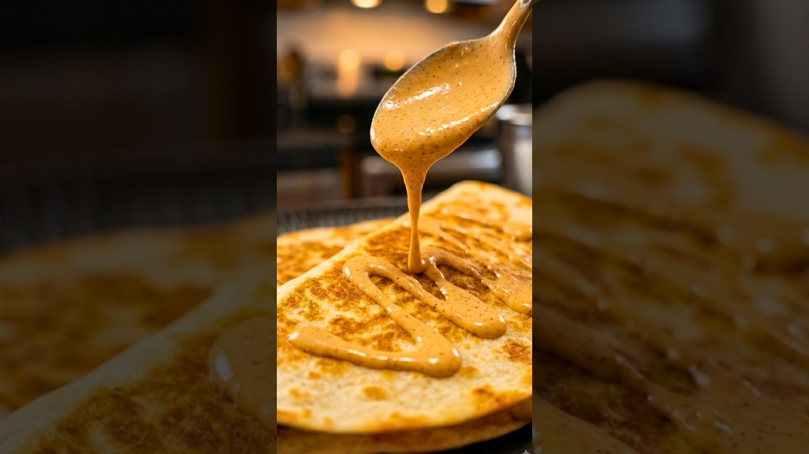

DishwithDrew's Taco Bell-style creamy jalapeño — the quesadilla sauce they charge 80 cents a side for. The whole trick is blending the entire jar of pickled jalapeños, brine and all.
Dump the entire jar of pickled jalapeños — slices and liquid — into a blender. Blend until completely smooth, scraping down as needed: you want a thin, pale-green puree with no chunks.
In a bowl, stir the mayonnaise and sour cream with every spice until smooth and evenly tinted.
Mix in 7 tbsp of the jalapeño puree. Taste, then add more a spoonful at a time if you want it hotter — too much turns it vinegary, so creep up on it.
Into an airtight container and refrigerate at least 1 hour — the resting time is where the flavor happens. Keeps 4 days. Quesadillas first, then everything else.